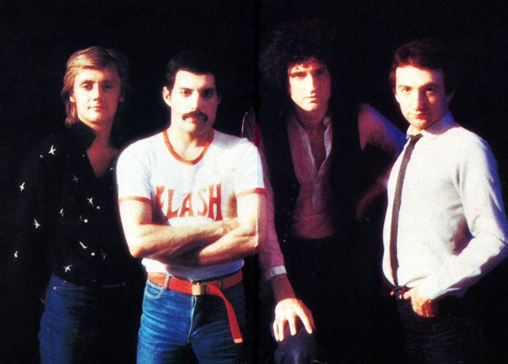
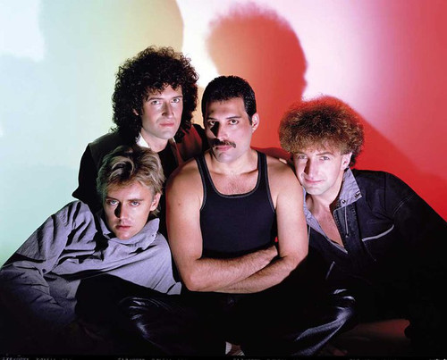

1980년, 밴드는 8번째 정규 앨범 The Game을 발매하는데, 처음으로 신디사이저를 도입하고 팝-펑크(funk) 지향적인 사운드로 변화를 꾀한 앨범이었다. 그 결과 앨범이 빌보드 차트 1위에 등극하고, 최초로 남미에서 투어를 한 메이저 밴드가 되는 등 인기의 정점을 맞이한다. 싱글 Another One Bites the Dust와 엘비스 풍의 컨트리 곡인 'Crazy Little Thing Called Love'두 곡도 빌보드 1위를 기록했을 뿐만 아니라, 프레디 머큐리의 가창력과 무대 매너는 이때 절정에 올랐다. 이 두 곡은 다양한 장르의 음악을 섭렵해서 보여주던 퀸에게도 이질적이고 특히나 컨트리, 디스코의 영향을 받은 미국색이 강한 곡이었는데, 그런 이질적인 곡조차 미국인이 듣고 미국의 밴드인 줄 알고 열심히 틀어대 빌보드 Hot 100 1위까지 만들었다는 점에서 퀸의 장르 흡인력이 절정에 달했던 시기이기도 하다.

80년 당시의 모습. 이때부터 프레디가 수염을 기르기 시작했다.
그 후 같은 1980년 9번째 정규 앨범으로서 SF 영화 <플래시 고든>의 OST 앨범을 발매한 이후 퀸은 펑키한 'Another One Bites the Dust'가 가져온 성공에 고무되어 82년 10번째 정규 앨범으로 디스코풍이 매우 강한 앨범 Hot Space를 발매하는데, 너무 나도 급작스런 변화와 퀸 특유의 사운드의 부재는 팬들마저 이 앨범을 외면하게 만들었고(당시 디스코란 장르가 끝물이기도 했다), 결국 퀸 역사에 흑역사로 취급을 받는 비운의 앨범이 되고 만다. 하지만 상당한 음악성으로 채워져 있어 버릴 만한 음반은 아니다. 다들 알 법한 노래 'Under Pressure'가 이 앨범 수록곡이기도 하고. 어쨌든 앨범의 실패와 팬들의 외면은 사실이었고, 퀸의 인기는 내리막길로 접어드는 것처럼 보였다. 다만 위에 언급했듯이 프레디의 가창력은 이 시기가 전성기였다. 밴드는 내리막길인데 프런트맨의 가창력은 전성기였다는 것이 아이러니하다.

1984년, The Works
10번째 정규 앨범인 Hot Space 이후 2년간 활동을 쉰 밴드는 1984년, 11번째 정규 앨범 The Works 를 발매했다. 앨범은 UK 앨범 차트 2위에 올랐고, 싱글 Radio Ga Ga는 히트했지만 밴드의 생산성이나 유럽이나 남미 등지를 제외한 곳의 인기는 예전만 못해보였고, 이 시기 멤버들의 솔로활동이 잦았던 탓에 해체설이 파다했다.